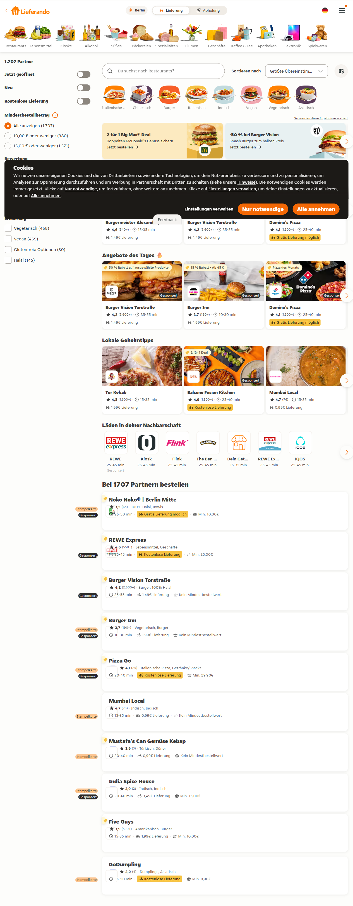

Platform experience
Browsing, comparison, and shortlist building
This example case study focuses on how users move from an open search to a confident shortlist when there are many competing restaurant options.
- Role
- Product designer / UX designer
- User need
- Find a reliable option quickly without scanning endlessly
- Contribution
- Information hierarchy, browsing flow, and decision support